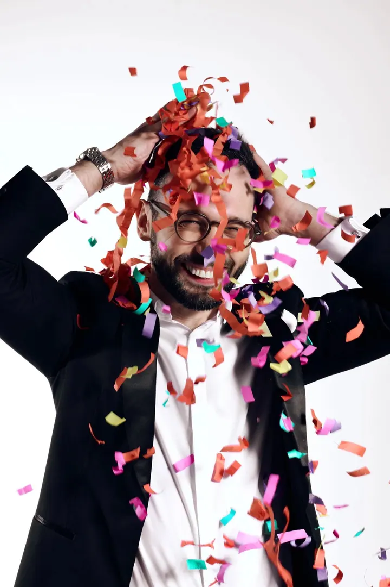
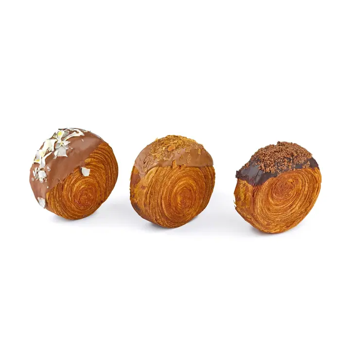
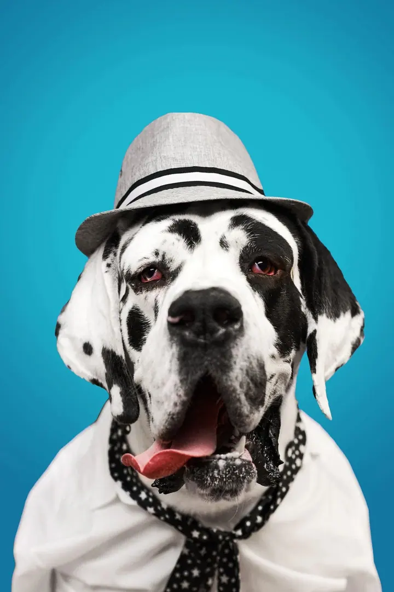
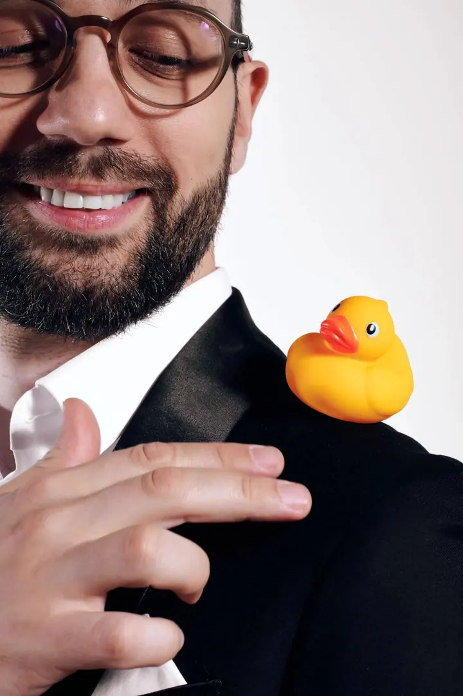
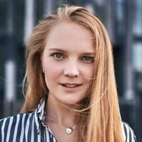

01 / 04
Interiéry a reality
Fotím byty, obchody i provozovny tak, aby vynikl prostor a denní světlo. Fotky se hodí do inzerátu, na web i na sociální sítě.
Zeptat se na termín→







Ať vám konkurence závidí
Zeptat se na termín →(01) Ahoj
Jmenuji se Elizaveta Korotková a jsem fotografka v Praze. Fotím interiéry , jídlo a produkty a reklamu pro firmy . S mým týmem k fotkám natočíme i video.
(02) Co fotím
01 / 04
Fotím byty, obchody i provozovny tak, aby vynikl prostor a denní světlo. Fotky se hodí do inzerátu, na web i na sociální sítě.
Zeptat se na termín→02 / 04
Fotky do katalogů, na Instagram a Facebook, pro e-shopy a marketplaces jako Amazon, Heureka nebo Etsy. Jídlo fotím pro menu, magazíny a sociální sítě přímo v restauraci, v kuchyni nebo v ateliéru.
Zeptat se na termín→03 / 04
K reklamě pro vaši firmu přistupuji po svém. Spolupracuji s týmem profesionálů: modelů, stylistů, vizážistů a designérů.
Zeptat se na termín→Dále nabízím
Fotím konference, firemní akce, festivaly a koncerty. S týmem točíme reklamy a reportáže z akcí, umíme živě vysílat z několika kamer a natáčet videa na YouTube.
↗(04) Postup
Od první zprávy po hotovou galerii.
Krok 1 z 4
Napíšete mi nebo zavoláte, co potřebujete nafotit a k čemu budou fotky sloužit. Podle toho navrhnu postup a cenu.
Krok 2 z 4
Domluvíme místo, termín a styl. U reklamy dám dohromady tým, tedy modely, stylisty a vizážisty, u jídla vybereme restauraci, kuchyni nebo ateliér.
Krok 3 z 4
Fotím v klidu a podle domluveného zadání. Když se k fotkám natáčí video, postará se o něj můj tým.
Krok 4 z 4
Vyberu nejlepší záběry, upravím je a předám ve formátu, který se hodí pro web, e-shop nebo sociální sítě.

Dobrá fotka prodává dřív než slova.
(05) Za objektivem
Fotografii se věnuji deset let. Fotím jídlo, interiéry, konference, firemní akce, produkty i reportáže. Mezi mé klienty patří velké i malé společnosti v České republice a v Evropě.
Na reklamní focení si přizvu tým profesionálů: modely, stylisty, vizážisty a designéry. Jídlo fotím tam, kde vzniká, tedy v restauraci nebo v kuchyni, případně v ateliéru. Produkty fotím tak, aby obstály v katalogu, na Instagramu i na Amazonu nebo Heurece.
Kromě focení s týmem točíme videa různé náročnosti: reklamy, reportáže z akcí, živé přenosy z několika kamer i videa na YouTube. Když budete chtít, pomůžu vám také s využitím umělé inteligence ve vašem projektu.

Elizaveta
Elizaveta Korotková · Fotografka interiérů, jídla a produktů
Produktové a reklamní focení začíná na 700 Kč, portréty na 1 000 Kč, focení nemovitostí, rodin a akcí na 1 500 Kč. Výsledná cena záleží na počtu produktů a typu focení, proto vám ji spočítám na míru.
Přímo v restauraci, v kuchyni nebo v ateliéru. Fotky se hodí do menu, do magazínu i na Instagram.
Ano. Fotím pro katalogy, sociální sítě, e-shopy i marketplaces jako Amazon, Heureka nebo Etsy.
Ano, s týmem točíme reklamy a reportáže z akcí, živě vysíláme z několika kamer a natáčíme videa na YouTube.